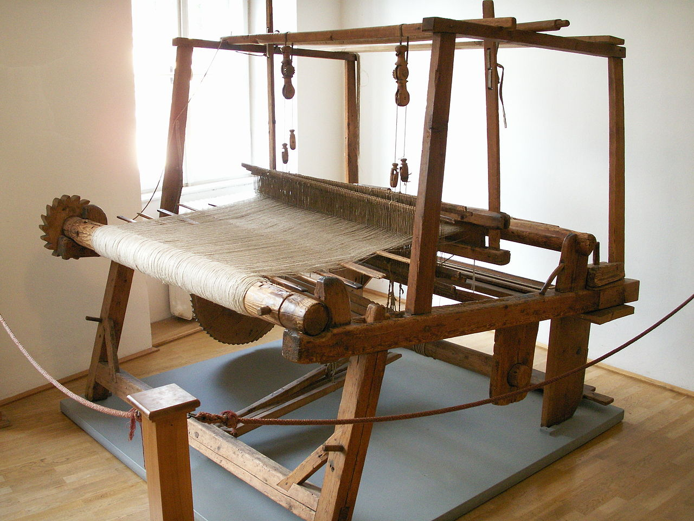
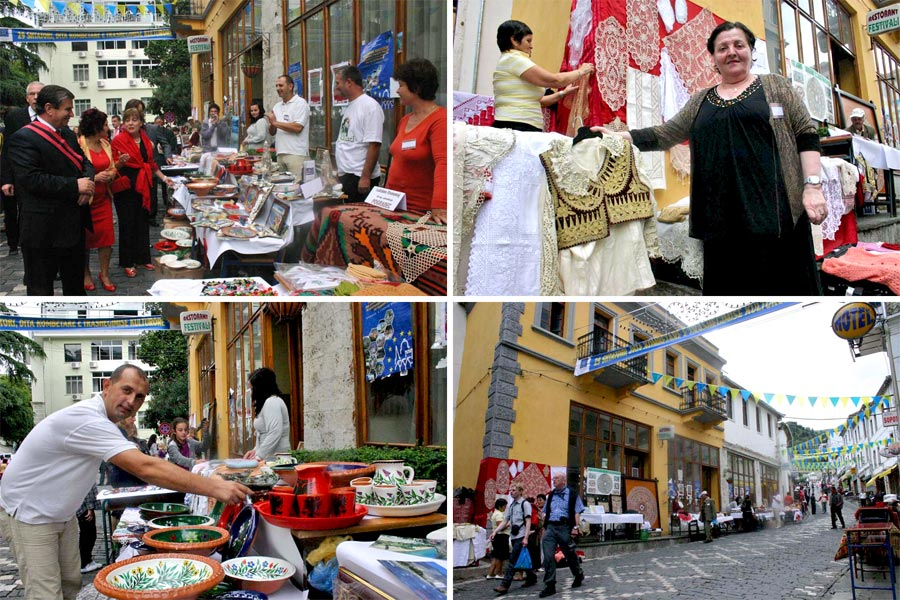
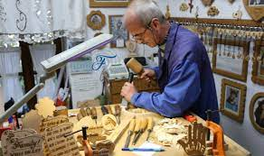

INDUSTRIA NË JUG TË SHQIPËRISË
Industria është e pasur dhe e larmishme duke patur zanafillë të hershme në vendin tonë. Mjeshtrit popullorë shqiptarë përveç përpunimeve
të gurit, drurit, metalit, argjendit e arit kanë zhvilluar një mjeshtëri të jashtëzakonshme në endjen, përpunimin dhe qëndisjen e pëlhurave të ndryshme. Veshja e
papërsëritshme kombëtare është fryt I mjeshtërisë së tyre. Por, nuk mund të mungojnë mjeshtrit e prodhimit të qylymave, perdeve, mbulesave të qëndisura për tavolina,
çentrove, shamive, këllëfëve, çarçafëve etj. Ata janë mjeshtër të përpunimit të pëlhurave , mëndafshit natyror, të pambukut, të leshit dhe të lirit plot simbolikë në
çdo punim dhe dekoracione shumëngjyrëshe.

Shqipëria është e njohur për një traditë tepër të pasur të artizanatit me vlera të çmuara, të krijuar prej shekujsh nga mjeshtrat popullorë,
në çdo krahinë të saj, sipas karakteristikave dhe specifikave të zonave të ndryshme gjeografike, duke u spikatur me shumllojshmërinë e saj, numrin e madh të
ekzemplarëve dhe relikeve si dhe paraqitjen estetike e objekteve të cilat arritën kulme të pandeshura më parë. Spikatin veçanërisht punimet në dru, në hekur, bakër,
alabastër, në materiale të çmuara ari dhe argjendi, lëkure, leshi, etj. Që veç të tjerash janë dëshmi edhe e identitetit tonë kombëtar. Këto vlera, tashmë të kaluara
brez pas brezi, ngjallin gjithnjë interes të madh tek vizitorët dhe studiuesit vendas dhe të huaj, në shumë ekspozita të hapura si brenda dhe jashte.Qytete si Berati,
Gjirokastra, Saranda kanë tashmë dyqanet e tyre me prodhime artizanale të zonave përkatëse.

Në Përmet vazhdon tradita e punimeve prej leshi, si qilima, rrugica, kënde, etj që gjejnë përdorim të gjerë familjar por edhe interes për
vizitorët vendas dhe të huaj. Për mënyrën e punimit, ornamentet, vlerat utilitare e estetike, prodhimet e këtij lloji kanë ngjallur interesimin e tregëtarëve të
shtetit fqinj, Greqisë. Në Korçë e Përmet është zgjeruar tradita e prodhimit të objekteve prej guri, hekuri dhe druri. Këtu mund të përmendim gdhëndjen në gur të kuq
të sofateve e çezmave nga mjeshtrat e Polenës, po kështu mund të thuhet edhe për prodhimin e oxhaqeve dekorativë po gjejnë përdorim për zbukurimin mjedisor shtëpijak.
Tanimë mjeshtrat e hekurit po realizojnë punime dekorative të atij niveli që po gjejnë përdorim jo vetëm në mjedise rrethuese, por edhe brenda lokaleve apo edhe brenda
shtëpive. Në Komunën e Antigonesë, në Gjirokastër në bashkëpunim me një fondacion holandez është ngritur punishtja “Artizanet e Antigonesë” të cilët prodhojnë punime
me avlemend, prej leshi, etj. Të cilat janë pritur mjaft mirë në tregun shqiptar dhe atë të huaj.

Nisur nga interesi që kanë jo vetëm për blerësit vendas por edhe të huaj, dhe zhvillimi që ka marrë artizanati shqiptar, janë organizuar
shumë panaire dhe ekspozita të këtij artizanati jashtë shteti për promovimin e këtyre vlerave të trashëgimisë kulturore shqiptare. Gjithashtu janë ngritur edhe shumë
shoqata të artizanëve të cilët organizojnë shumë veprimtari promovuese si brenda ashtu edhe jashtë vendit. Artizanati mund te na duket si nje praktikë e cila duhet te
ruhet thjeshtë nga njerëz te caktuar por ne fakt artizanati duhet te na perfshij te gjithë neve.Artizanati shqiptar perfaqeson kulturën shqiptare ne mënyrë të
veçantë dhe edhe pse nuk I kushtohet shume vëmendje ai ruan praktika prej shekujsh te kaluar. Artizanati nuk na ndihmon te ruajme vetëm kulturën te vendit tonë por
edhe kulturen familjare. Artizanati eshte nje praktike qe zakonisht kalohet brenda familjes dhe cdo send qe formohet me ane te mesimeve familjare eshte e sigurte qe
do te jete shume me vlere. Artizanati pra ka vlere kulturore,familjare dhe sigurisht edhe individuale sepse edhe pse ka nje rend te caktuar pune qe duhet ndjekur
artizanati te lejon te specializosh punen sipas mendjes tende duke e bere keshtu me unike.